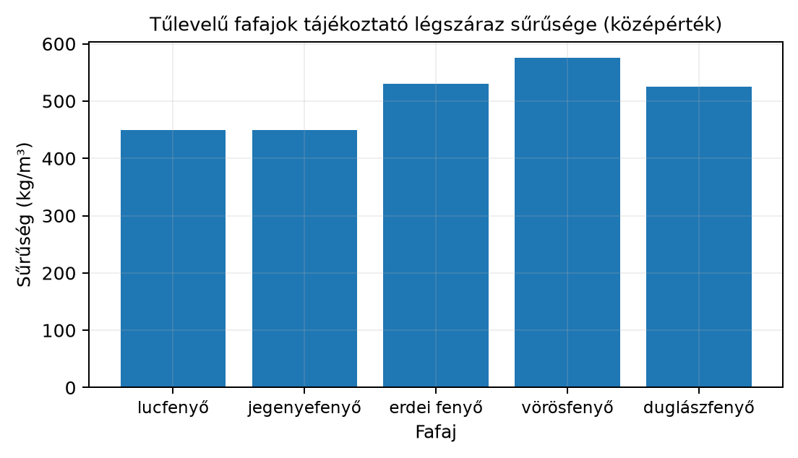

A műhelyben sokszor ugyanaz a kérdés: „fenyőből csináljuk, de melyikből?” A válasz azon múlik, hogy a fa kint dolgozik-e (ablak, lépcső, kültéri burkolat), vagy bent (lambéria, bútorváz, díszléc), mekkora terhelést kap, és mennyire fontos a gyanta, a göcsösség vagy a felületkezelhetőség.
Ebben a fejezetben a hazai és Európában gyakran használt tűlevelű fafajokkal dolgozunk: lucfenyő, jegenyefenyő, erdei fenyő, vörösfenyő és duglászfenyő. A fajfelismerésnél a Fafajfelismerés: elsődleges és másodlagos meghatározók alfejezetben tanult jegyeket használjuk: szín, évgyűrűhatár, gyantajárat, szijács–geszt, illat, keménység, textúra.
Továbbvitt eredmény. A fenyőfajok itt megtanult tulajdonságait a fűrészáru-osztályozásnál (Fűrészáru fajtái, méretei és minőségi osztályozása) és a nyílászáróknál (Ablakok: rendeltetés, csoportosítás, méretmegadás és szerkezetek) újra elővesszük: ott azt kell eldönteni, hogy egy adott szabásjegyzék-tételhez melyik fenyő illik anyagminőségben, tartósságban és megmunkálhatóságban.
Tegyünk a gyalupadra négy, frissen gyalult deszkát (tájékoztató, jellemző kép):
Ezután következik a pontos, műhelyben is használható leírás.
Definíció. Tűlevelű fafajnak nevezzük a nyitvatermőkhöz tartozó fa- és cserjefajokat, amelyeknek többnyire tűleveleik vannak, fájukban pedig a lombos fák nagy részétől eltérően nincsenek vagy alig vannak nagy átmérőjű vízszállító edények. A vízszállítást vékony falú, hosszú sejtek, a tracheidák végzik.
Ez a felépítés adja azt a műhelyben jól érzékelhető tulajdonságot, hogy a fenyőfa általában könnyebb, puhább és rugalmasabb, mint a tölgy vagy bükk, és a felülete egyenletesen, „hosszú szálakban” gyalulható. A fenyőfajok egymástól viszont nagyon eltérnek abban, hogy mennyire gyantásak, milyen a szijács–geszt szerkezetük, mekkora a sűrűségük és milyen a tartósságuk.
Szabály. A fenyőfaj megnevezésekor mindig a pontos fajnevet használjuk a műhelyben, ne csak „fenyőt” mondjunk. A „fenyő” megnevezés nem azonosítja sem a sűrűséget, sem a tartósságot, sem az árat. A szabásjegyzékben és az ajánlatban tehát így szerepeljen: lucfenyő, erdei fenyő, vörösfenyő stb.
A lucfenyő (gyakori német neve a kereskedelemben: fichte) fája halvány sárgásfehér, a szijács és a geszt színe alig különbözik. Az évgyűrűk jól látszanak, mert a késői pászta keskeny, sötétebb sávot ad. A puhább korai pászta és a keményebb késői pászta váltakozása miatt a gyalult felületen enyhe hullámosság figyelhető meg.
A lucfenyőre jellemző a sok, kemény, sötét göcs, amely a száraz anyagban gyakran „kipottyan”, ha a göcs zsugorodása miatt meglazul. A gyantajáratok szabad szemmel alig láthatók, de a fa gyantás lehet, és a gyanta a felületen sárga cseppként vagy ragacsos foltként jelenik meg.
A lucfenyő a legfontosabb szerkezeti fa a hazai és közép-európai asztalos- és építőiparban. Könnyű, jól szegezhető, csavarozható, jól ragasztható, jól gyalulható és jól pácolható, de a gyantát a felületkezelés előtt el kell távolítani.
Tájékoztató légszáraz sűrűsége körülbelül 400–500 kg/m³ a száradás utáni állapotban (ellenőrizendő szakkönyvi táblázat szerint). Ezért jó, ha könnyű szerkezet kell: bútorváz, ládakeret, falváz, lambéria, gerenda. A kemény göcsök miatt vágásnál a szerszámot jobban terheli, és a göcs környékén a fa hajlamos repedezni.
Gyakori felhasználás: beltéri lambéria, bútorváz, asztal- és szekrényalkatrészek, csomagolóanyag, építőipari fűrészáru, rétegelt lemez alapanyaga. Tömör, egy darabból készült lucfenyő kültéri ablakra kevésbé alkalmas (vetemedés, göcsök); a mai ablakgyártásban azonban elterjedt a rétegelt-ragasztott, hibamentesített lucfenyő vagy erdeifenyő profil (ellenőrizendő: gyártói adatlap), amely megfelelő kültéri felületkezelő rendszerrel tartós.
A jegenyefenyő fája a lucnál még egyenletesebb, krémfehér vagy halvány sárgásfehér. A szijács és a geszt nem különül el. Az évgyűrűk látszanak, de a késői pászta kevésbé éles. A legfontosabb felismerő jegy: a lucnál kevesebb, világosabb, „húsosabb” göcs; emellett a gyalult felületen a gyantajáratok hiánya miatt nincs annyi apró, sötét pont.
A jegenyefenyő hasonlóan könnyű és puha, mint a luc, sűrűsége tájékoztatóan 400–500 kg/m³ (ellenőrizendő). A fa kevésbé gyantás, ezért sokkal hálásabb felületkezelni: a pácolás és a lakk egyenletesebb, a gyantafolt okozta elszíneződés ritkább.
Hátránya, hogy a fája hajlamos a göcs körüli szöveti elváltozásokra és a nedves állapotban való kékülésre, ezért gyorsan kell szárítani és jól szellőztetni. A lucnál gyakran kicsit puhább, ezért inkább belső szerkezetekhez, nem nagy kopásnak kitett felületekhez használjuk.
Gyakori felhasználás: beltéri lambéria, belső burkolatok, bútorváz, díszléc, redőny, zsalu, csomagolóanyag. Szerkezeti faanyagnak is használható, de általában a lucot jobban ismeri a piac.
Az erdei fenyő a lucnál és a jegenyefenyőnél lényegesen jobban megmutatja a szijács–geszt elkülönülést. A geszt vörösesbarna, narancsos barna, idővel sötétedik; a szijács széles, halvány sárgásfehér. Ez az erős színkülönbség azonnal szembetűnő.
Az erdei fenyő erősen gyantás. A gyantajáratok a keresztmetszeten kis fehér pontokként, a hosszmetszeten vékony, sötét vonalakként látszanak. A fa frissen vágva erős, kellemes gyantaillatú. Az évgyűrűhatárok élesek: a korai pászta világos, a késői pászta vörösbarna sávot ad.
Az erdei fenyő a lucnál nehezebb, keményebb és tartósabb, főleg a gesztje. A geszt természetes tartóssága jobb, mint a szijácsé, ezért kültéri használatra a gesztben gazdag, szinte szijácsmentes anyagot keressük. A széles szijács azonban kékülékre és rovarkárra hajlamos, ezért kültéren vegyi védelem vagy hőkezelés nélkül nem szabad szijácsos anyagot beépíteni.
A magas gyantatartalom miatt a szerszámokra gyanta rakódik, a csiszolópapír gyorsan eldugul, a felületkezelő anyag pedig foltosan köthet. Ezért erdei fenyőnél különösen fontos a gyantamentesítés.
Gyakori felhasználás: ablak- és ajtótok, beltéri és kültéri burkolat, bútor, lépcső, korlát, falburkolat, asztalosipari gyalult áru. Az ablakgyártásban hagyományosan a sűrű, gesztes, lassan nőtt erdei fenyőt használják, mert kellően merev és jól megmunkálható (a mai gyakorlatban a vörösfenyő és a tölgy mellett).
Fontos. Az erdei fenyőnél a szijács és a geszt zsugorodása eltérő, ezért a deszkák jobban hajlanak és csavarodnak, ha egy alkatrészben nagy szijács és nagy gesztfelület is van. Vágáskor a lehető legtöbb alkatrészt gesztből vagy szijácsból külön készítsük, és ne keverjük egy alkatrészen belül.
A vörösfenyő az egyik legfontosabb tűlevelű fánk, amelynek színes, vörösesbarna gesztje és keskeny, világos szijácsa van. Az évgyűrűk nagyon élesek: a korai pászta világossárga, a késői pászta sötét vörösesbarna. A felülete durvább, mint a lucé, de a textúra erőteljes, dekoratív.
A fa gyantás, frissen fűrészelve markáns gyantaillatot áraszt. A gyantajáratok finomak, de a göcsök környékén gyakori a gyantafészek.
A vörösfenyő a nálunk telepített fenyők közül a legkeményebb; gesztje mérsékelten tartós (ellenőrizendő: MSZ EN 350). Sűrűsége tájékoztatóan 550–600 kg/m³ (ellenőrizendő), tehát lényegesen nehezebb a lucnál. Kültéren, talajjal nem érintkező, jól kiszellőző szerkezetben (lépcső, burkolat, kerti bútor, erkélyburkolat) szerkezeti védelemmel jól bevált; talajjal érintkező elemhez (támfal, földbe állított oszlop) vegyi védelem vagy tartósabb fafaj (pl. akác) kell.
A vörösfenyő jól gyalulható, esztergályozható és marható, de a gyantája miatt a szerszámok könnyen ragacsosodnak, és a felületkezelés előtt szintén gyantamentesíteni kell. A nagyobb sűrűség miatt a szerszámok jobban terheltek, és a csiszolás is több időt vesz igénybe.
Gyakori felhasználás: kültéri és beltéri lépcső, kerti bútor, kerítés (talajtól elválasztva), erkélyburkolat, ablak és ajtó, hajópadló-szerű burkolat, díszlécek.
A duglászfenyő (gyakran „amerikai duglászfenyő” vagy „oregon fenyő”) Közép-Európában telepített fafaj is. Fája vörösesbarna, de a vörösfenyőnél általában világosabb, rózsaszínes barna. Az évgyűrűhatárok szintén élesek, a korai pászta világos, a késői pászta sötét vörösesbarna sáv. A szijács keskeny, halvány sárgásfehér, a geszt színe jobban elválik. A fa gyantás, a gyantatartalom magas lehet.
A duglászfenyő a vörösfenyőhöz hasonlóan kemény, gesztje mérsékelten tartós (ellenőrizendő: MSZ EN 350), sűrűsége tájékoztatóan 500–550 kg/m³ (ellenőrizendő). A fa jól szilárd, rugalmas, jól ragasztható és jól megmunkálható, de a kemény göcsök és a gyanta ugyanolyan gondot okozhat, mint az erdei fenyőnél.
A duglászfenyőt főleg kültéri szerkezetekhez, nyílászárókhoz, lépcsőkhöz és olyan helyekre használjuk, ahol nagyobb méretű, hosszú, egyenes, teherbíró faanyag kell. A kereskedelemben gyakran nagy méretű, válogatott, gesztes áruként kapható.
Figyelem. A duglászfenyő a magyar piacon gyakran importált anyag, ezért a pontos származás, minőség és tartósság a termékleírástól függ. Vásárláskor kérjük a gyártói/szállítói adatlapot vagy a fűrészáru minőségi osztályát.
A fenyőfélék gépi és kézi megmunkálása általában könnyű, de három tényezőre figyelni kell:
Recipe: gyantamentesítés tömör fenyőn
Tilos. A gyantás fát sűrűn, forró levegős pisztollyal hevíteni, mert a gyanta felolvad, mélyebbre hatol, és a felület gyakorlatilag tönkremegy. Ugyanígy tilos a gyantás csiszolatport forró fűrészlap vagy szikraforrás közelében hagyni: a finom fapor és a gyantás por éghető keveréket alkothat.
A táblázatban tájékoztató értékek szerepelnek. A tényleges kiválasztást a termék műszaki adatlapja, a fűrészáru-osztály és a beépítési hely igénye határozza meg.
Az alábbi oszlopdiagram a táblázat sűrűségtartományainak középértékét mutatja (tájékoztató, ellenőrizendő).

| Fafaj | Sűrűség tájékoztató (kg/m³) | Tartósság kültéren | Fő felhasználás | Megmunkálhatóság | Megjegyzés |
|---|---|---|---|---|---|
| Lucfenyő | 400–500 | gyenge; csak védve | beltéri szerkezet, lambéria, bútorváz | könnyű, de göcsös | gyakori, olcsó, jól pácolható |
| Jegenyefenyő | 400–500 | gyenge; csak védve | beltéri burkolat, bútorváz, díszléc | könnyű, kevés gyanta | kevésbé gyantás, de puhább |
| Erdei fenyő | 510–550 | gesztje mérsékelten tartós; szijácsa nem tartós; talajérintkezésre nem | ablak, ajtó, lépcső, burkolat | jól dolgozható, gyantás | gesztet válasszuk kültérre |
| Vörösfenyő | 550–600 | gesztje mérsékelten tartós; szijácsa nem tartós; talajérintkezésre nem | kültéri lépcső, kerti bútor, kerítés, ablak | keményebb, gyantás | a geszt mérsékelten tartós (ellenőrizendő) |
| Duglászfenyő | 500–550 | gesztje mérsékelten tartós; szijácsa nem tartós; talajérintkezésre nem | kültéri szerkezet, nyílászáró, lépcső | kemény, gyantás | gyakran import, ellenőrizendő adatok |
Figyelem. A táblázat sűrűség- és tartóssági értékei szakkönyvi tartományok, nem pontos mérési adatok. A faanyag sűrűsége a termőhelytől, a szárítástól, az évgyűrűszélességtől és a nedvességtartalomtól is függ. Kültéri beépítésnél mindig kérdezd meg, hogy a szállítottanyag gesztaránya, nedvességtartalma és vegyi kezelése megfelel-e a beépítési osztálynak.
Ha a feladat egy ablak, akkor az anyagnak egyenesnek, merevnek és jól profilmarhatónak kell lennie. A legjobb választás a lassan nőtt, gesztes erdei fenyő, a vörösfenyő vagy a duglászfenyő, mert ezek sűrűbbek és tartósabbak, mint a luc. Tömör luc tokot kültérre ne használj; rétegelt-ragasztott, hibamentesített luc profil megfelelő felületkezelő rendszerrel kültéren is bevált (ellenőrizendő: gyártói adatlap).
Ha a feladat egy lépcső, akkor a kopásnak, hajlításnak és a nedvességváltozásnak is ellen kell állnia. Itt a vörösfenyő és a duglászfenyő a legjobb fenyőválasztás, mert kemények; kültéri lépcsőnél a szerkezeti védelem és a talajtól való elválasztás elengedhetetlen (a geszt csak mérsékelten tartós, ellenőrizendő). Beltéri lépcsőnél az erdei fenyő is megfelel, ha sűrű gesztes anyagot választunk.
Ha a feladat beltéri burkolat (lambéria), akkor a könnyű, jól pácolható luc és a kevésbé gyantás jegenyefenyő a legkedveltebb. Ha kültéri burkolat kell (erkély, terasz), akkor a vörösfenyő vagy a duglászfenyő ajánlott, mert a luc és a szijácsos erdei fenyő hamar tönkremegy.
Egy kivitelező egy kültéri lépcsőt rendelt. A rajzon a lépcsőfok „fenyő, gyalult, lakkozott” megnevezéssel szerepelt. Az asztalos a legolcsóbb lucfenyőből készítette el, és normál fára való lakkal vonta be. Két év után a fokok megvetemedtek, a lakkozás felpattogzott, a csapadék hatására a fa elszürkült és korhadni kezdett.
A hiba oka: a „fenyő” megnevezés nem volt egyértelmű, és a kültéri beépítéshez nem megfelelő fafajt választottak. A helyes gyakorlat: a rajzon és az ajánlatban pontosan meg kell nevezni a fafajt, és kültéri lépcsőhöz vörösfenyőt vagy duglászfenyőt kell használni; a fát gyantamentesíteni kell, és kültéri felületkezelő rendszert kell alkalmazni. Javítás: a fokok cseréje vörösfenyőre, a felület előkészítése és kültéri lazúr/lakk felhordása.
Sorold fel a hazai és Európában gyakori tűlevelű fafajokat, és írd le, melyiknek különül el élesen a szijácsa és a gesztje.
Számítsd ki egy lucfenyőből készült deszka tömegét, ha a mérete: hossz 2,0 m, szélesség 100 mm, vastagság 20 mm, és a légszáraz sűrűséget 450 kg/m³-nek vesszük. Ellenőrizd a nagyságrendet.
Egy kültéri teraszburkolathoz két fafaj közül választasz: lucfenyő és vörösfenyő. A burkolat 12 m², a deszka vastagsága 20 mm. A luc ára mintaárként 450 000 Ft/m³, a vörösfenyő ára 650 000 Ft/m³. Számold ki a burkolathoz szükséges anyag térfogatát és anyagköltségét mindkét fafajjal, 10% hulladék-ráhagyással. Melyiket választod kültérre és miért?
Rajzolj le szövegesen egy faablak-tok keresztmetszetet erdei fenyőből. Írd le, milyen rajzi nézetet használsz, milyen méreteket adsz meg, és milyen anyagjelölést alkalmaznál a szakrajzon. Cél: a gyakorlatban is használható tokprofil vázlat.
Egy műhelyben az ablakgyártáshoz lucfenyőt használnak, de a kész tok két év után repedt és vetemedett. A vevő reklamál. Írd le, mi lehet a hiba oka, és milyen anyag- és technológiai módosításokat javasolsz a javításhoz és a megelőzéshez.
Készíts gyantamentesítési eljárást egy vörösfenyő lépcsőfokhoz. Add meg: a szükséges anyagokat, védőeszközöket, a művelet lépéseit, az ellenőrzési pontokat és a dokumentálást. Térj ki arra, mi történik, ha a gyantát nem távolítod el a lakkozás előtt.
A fajok: lucfenyő, jegenyefenyő, erdei fenyő, vörösfenyő, duglászfenyő. Éles szijács–geszt elkülönülés az erdei fenyőnél a legszembetűnőbb: a szijács halvány sárgásfehér, a geszt vörösesbarna. Ezen kívül a vörösfenyőnél és a duglászfenyőnél is látható szijács–geszt különbség, de általában kisebb, mint az erdei fenyőnél (a vörösfenyőnél keskeny a szijács).
Adott:
,
,
,
.
Keresett:
.
Képlet:
,
majd
.
Behelyettesítés:
Ellenőrzés: egy 2 m hosszú, 10 cm széles, 2 cm vastag lucdeszka
nagyjából 1,8 kg, ez reális.
A burkolat térfogata
.
10% hulladék:
.
Luc költség:
.
Vörösfenyő költség:
.
Kültérre a vörösfenyőt választom, mert a lucnál
tartósabb, keményebb, és a kültéri nedvességnek jobban ellenáll. A
magasabb árat a hosszabb élettartam indokolja. Ellenőrzés: a vörösfenyő
körülbelül 45%-kal drágább, de tartóssága sokkal jobb.
Rajzleírás: E vetületi rendben készítenék egy keresztmetszetet a tokprofilról. A rajzon a metszet a tokszerkezet szélességére merőleges, és a tok alsó kapcsolatát mutatja. A tokszár 78 mm mély (külső–belső irányban) és 80 mm magas, az ablakfejezet 78 mm-es profiljához igazodva (tájékoztató méretek). A belső oldalán a szárnyfogadó falc (kb. 58 × 20 mm, tájékoztató) látszik, amelyre az ablakszárny csukódik; a falc fenekén vízelvezető horony fut, ebből vízkivezető furatok vezetnek a külső oldalra. A cseppentő élt nem a tokra, hanem a szárny vízvetőjére tervezzük. Az anyagjelölés: erdei fenyő – a metszetben a faanyag sraffozását a szabványos faanyagjelölés szerint húzom. A gyantagöcsöt a rajzon nem jelölöm, de a megjegyzésben feltüntetem, hogy a tokhoz gesztes erdei fenyőt kell használni. A rajz méreteit mm-ben adom meg, a méretszám mögé mértékegységet nem írok. A rostirányt a tok hossztengelyében jelölöm.
A hiba lehetséges okai: a lucfenyő kültéri ablakra nem elég tartós, nagy a zsugorodás-dagadása, és a luc gyakran vetemedik, repedezik a nedvességváltozás hatására; továbbá a gyantás felületet nem gyantamentesítették, és esetleg nem megfelelő, kültéri beépítésre nem alkalmas lakkot használtak. Javítás: a tok anyagát cseréljük gesztes erdei fenyőre, vörösfenyőre vagy duglászfenyőre, vagy használjunk rétegelt-ragasztott, hibamentesített profilt; a szárny és a tok kapjon vízvetőt, cseppentőt. A fát szárítsuk a beépítési helynek megfelelő nedvességtartalomra (tájékoztató, ablaknál jellemzően 12–15%, ellenőrizendő). A felületkezelés előtt gyantamentesítsük, és használjunk kültéri, rugalmas, UV-álló lakkrendszert.
Cél: fenyő lépcsőfok gyantamentesítése lakkozás
előtt.
Anyagok: gyantamentesítő oldószer (gyártóilag
engedélyezett fenyőre), tiszta oldószerálló rongy, megfelelő
védőeszköz.
Gépbiztonság / egészségvédelem: jól szellőztetett
helyiség, oldószerálló kesztyű, védőszemüveg, szükség szerint
légzésvédő. Nyílt láng és hőforrás tilos.
Lépések: 1. Csiszold a fokot 120–150-es csiszolóanyaggal; port távolítsd el. – Ellenőrzés: a felület tiszta, szálmentes. 2. Vigyél fel gyantamentesítőt a gyantás foltokra; használj tiszta rongyot. – Ellenőrzés: az anyag ne folyjon le, a folt teljesen benedvesedett. 3. Hagyd a szert megszáradni a gyártói adat szerint. – Ellenőrzés: a felület nem ragad. 4. Ha a gyanta újra átüt, ismételd meg; ha szükséges, sekélyen vágd ki a folyós gyantát, és töltsd ki fapassttal. – Ellenőrzés: nincs látható folyós gyanta. 5. Próbapácolj és próbalakkozz rejtett felületen. – Ellenőrzés: nincs gyantafolt, egyenletes a felület. 6. Dokumentáld a műveletet a munkalapon: anyag, rétegszám, száradási idő, észrevétel. – Ellenőrzés: aláírt, dátummal ellátott munkalap.
Ha a gyantát nem távolítod el, a lakk nem tapad, a gyanta átüt a bevonaton, sárga foltokat és ragacsos felületet okoz. A lépcső így idő előtt felületi hibás lesz, és újra kell csiszolni.
A hazai és európai tűlevelű fafajok közül a lucfenyő és a jegenyefenyő világos, könnyű, puha; beltéri szerkezetre, lambériára és bútorvázra való. Jellemzőjük a sok, kemény göcs, a lucnál erősebb, a jegenyefenyőnél kisebb gyantatartalom. Az erdei fenyő szijácsa világos, gesztje vörösesbarna, erősen gyantás; a gesztje kültéren is jó tartósságú, ezért ablakhoz, ajtóhoz, kültéri burkolathoz és lépcsőhöz a gesztben gazdag anyagot használjuk. A vörösfenyő és a duglászfenyő a legkeményebb telepített tűlevelű anyagok közé tartozik, gesztjük mérsékelten tartós (ellenőrizendő); talajjal nem érintkező kültéri szerkezethez, lépcsőhöz, kerti bútorhoz szerkezeti védelemmel használhatók. Minden gyantás fenyőfajnál gyantamentesítést kell végezni a felületkezelés előtt, mert a gyanta átüthet a pácon és a lakkon. A szabásjegyzékben és az ajánlatban mindig a pontos fafajnevet tüntesd fel, ne csak „fenyőt”.
Továbbvitt eredmény. A fenyőfajok itt megtanult tulajdonságait a fűrészáru-osztályozásnál (Fűrészáru fajtái, méretei és minőségi osztályozása) arra használjuk, hogy az anyagnorma és a szabásjegyzék szerint a megfelelő fenyőt rendeljük; nyílászáróknál (Ablakok: rendeltetés, csoportosítás, méretmegadás és szerkezetek) pedig az ablak- és ajtótok anyagválasztásában térünk vissza rá.